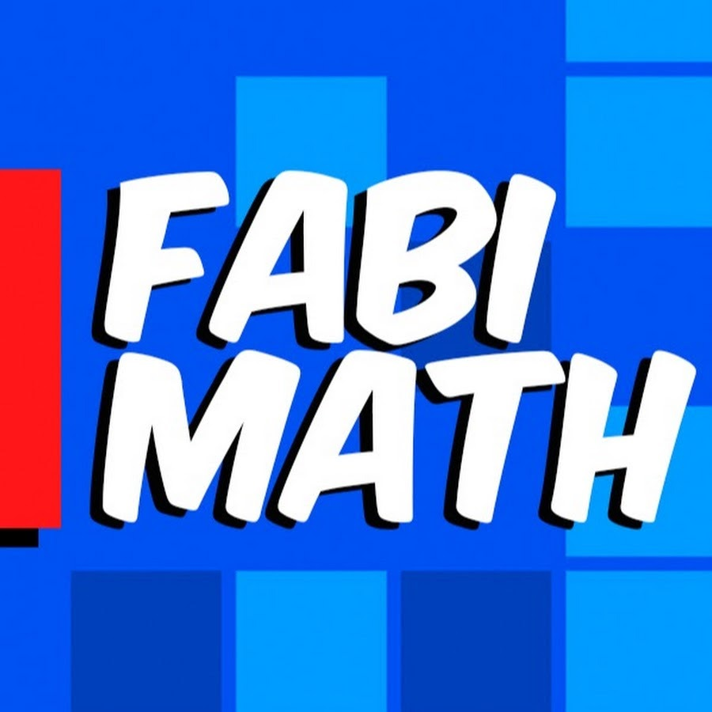

◀ FABIMATH
GATITO AES ▶
Gatos Quiz
PROBABILIDAD Y ESTADÍSTICA · ELIGE TU GATO · 8-BIT EDITION
Cada gato domina un tema. Responde con clic o teclas A-B-C-D.
Tras responder verás la pauta. ENTER para continuar.
·
0 ✓
GATO
◀ TEMAS
SIGUIENTE ►
◀ ELEGIR OTRO TEMA
↻ REPETIR